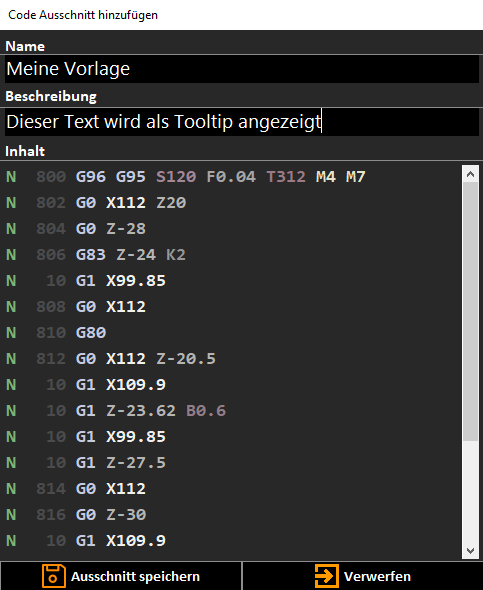

Template Creation
With the template-manager, code-templates can be created, organized and inserted. As with the file explorer, templates can be created using the context menu or the toolbar.
An example video is provided HERE.

By pressing the button 'Add template', an input window will be opened.
The name of the template, a description and the content can be defined. If text was previously selected in the editor, it is set automatically as the content of the template. The description of the template is visible if the mouse-cursor is hovering over the appropriate item in the template manager tree-view.
All elements of the template manager can be modified via toolbar or context-menu.
Filter
Like folders, filters have the purpose to organize items and can be used likewise. But filters have no physical equivalent in the file-system. If a filter that contains templates is deleted, the included templates will be assigned to the super folder.
The storage location of the templates is the CnC-Suite folder in the users documents directory (CnC-Suite/Templates). This location must not be removed or renamed, otherwise this could cause malfunction of the application.